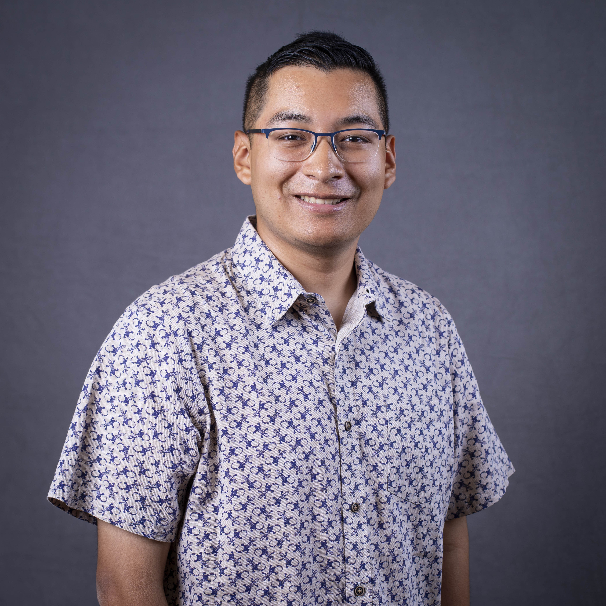

Meet Esteban Ayala - A ColorStack UTRGV member making waves in tech
ColorStack UTRGV Vice President
After building his first gaming PC in middle school, Esteban discovered he had a passion for the inner workings of a computer. That curiosity grew stronger in high school when he took a web development class. This class opened the door to programming and ultimately guided him toward pursuing a career as a software engineer.
 His journey hasn't been without challenges. Early on, Esteban struggled academically, but through persistence, research, and resources like Levels.fyi for motivation, he began to see a clear path forward. That shift in mindset motivated him to apply for internships, and after persevering through setbacks, he landed his first software engineering internship role at Workday and most recently completed his fourth software engineering internship at Pinterest. These experiences not only strengthened his technical skills but also gave him confidence that he could thrive in the industry.
As a person leaning on the more reserved side, Esteban has always paid close attention to the communities around him. Sitting in the classrooms at UTRGV, surrounded by Latinx peers, he felt a strong sense of belonging. But during his first trip to Silicon Valley, he experienced culture shock as he realised he was one of the very few Latinos in the room. Most of the industry professionals he met were White, Asian, or Indian, and the lack of representation signalled a call to action. It fueled his determination to increase the presence of Latinx individuals in tech, a field that can sometimes feel distant and exclusive.
Through organisations like ColorStack and especially the UTRGV chapter, Esteban found a supportive community of peers who share similar experiences and challenges. Being part of this community and meeting like minded individuals strengthened his resolve of one day making it into big tech. He now makes it a point to encourage younger computer science students, especially freshmen, to pursue internships early, so they too can gain confidence and build their careers.
Looking ahead, Esteban intends to begin his career as a software engineer in big tech. As a Latinx student entering a field with low diversity, he knows the path won't always be easy, but he embraces the challenge. For him, stepping into spaces where he may feel out of place isn't a setback; it's a sign that he's moving beyond his comfort zone and into a place of growth. And as he continues to learn and develop as an engineer, he hopes to inspire and uplift others from underrepresented backgrounds to do the same.